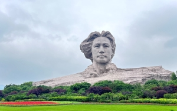
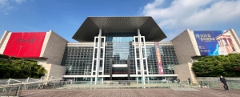
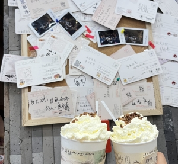
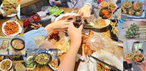

- 21°C~28°C
游玩介绍~ 入‘湘’随俗

岳麓山-爱晚亭“停车坐爱枫林晚”就是在描述爱晚亭，始建于清乾隆五十七年。个人觉得拍照还是非常出片的，亲眼见到时非常好看。 |

橘子洲-毛泽东青年雕塑橘子洲毛泽东青年雕塑是为了纪念毛泽东同志诞辰116周年而建造，共同感受伟人情怀，传承伟人精神。在导航中可以看到毛主席眼睛眺望的方向是台湾，也郑重说明收复台湾指日可待。 |

古开福寺古开福寺是中国佛教重点开放寺院之一，是禅宗临济宗杨岐派著名寺院。始建于五代时期，已有1000多年历史。建筑非常宏伟，心诚则灵。 |
|---|---|---|

IFS国金中心长沙国际金融中心双子塔楼的设计灵感来自于在湖南旅游胜地张家界，其形态隐喻张家界的奇峰秀石；裙楼体现水的元素，表征了湖湘文化的特色。可以去和cows打卡拍照，不得不说人是真的多。 |

湖南省博物馆湖南省博物馆创办成立于20世纪50年代初，馆藏文物丰富，尤以马王堆汉墓文物、商周青铜器、楚文物、历代陶瓷、书画和近现代文物等最具特色。 是湖南省最大的综合性历史艺术博物馆。当时去的时候还恰好遇到古希腊爱情海展出，安保很严，非分之想就不要有了。 |

杜甫江阁杜甫江阁属于园林仿古建筑，为纪念唐朝诗人杜甫所建。晚上七点左右开灯，开灯的瞬间也是会有一些视觉冲击的，在湘江边上更显得别具一格。 |

文和友美食城寨文和友是湖南文和友文化产业发展集团有限公司旗下的品牌。文和友致力于传统民俗餐饮文化的研究，挖掘地域民间小吃，结合潮流文化，形成“文和友餐饮模式”。 |

茶颜悦色茶颜悦色是一个茶饮甜品连锁品牌，是湖南本土品牌。茶饮颜值高且好喝，国风饮品你值得拥有。 |

长沙美食去长沙不吃长沙臭豆腐算是没去长沙，长沙除了臭豆腐还有非常多的美食。比如：小龙虾，烧烤，虾扯蛋，杯杯面等。每一个都非常好吃，都值得推荐。 |